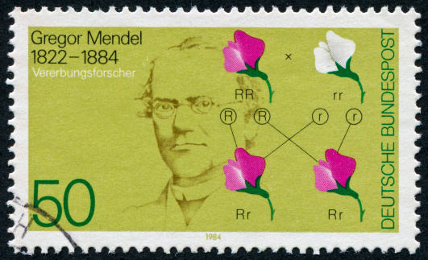

Gregor Mendel, a 19th century Augustinian monk, is called the father of modern genetics. He used a monastery garden for crossing pea plant varieties having different heights, colors, pod shapes, seed shapes, and flower positions. Mendel’s experiments, between 1856 and 1863, revealed how traits are passed down from parents. For example, when he crossed yellow peas with green peas, all the offspring peas were yellow. But when these offspring reproduced, the next generation was ¾ yellow and ¼ green. Mendel’s work, which was presented in 1865, showed that what we now call “genes” determine traits in predictable ways.
https://unlockinglifescode.org/timeline/1865-gregor-mendel-father-modern-genetics-presents-his-research-experiments-plant